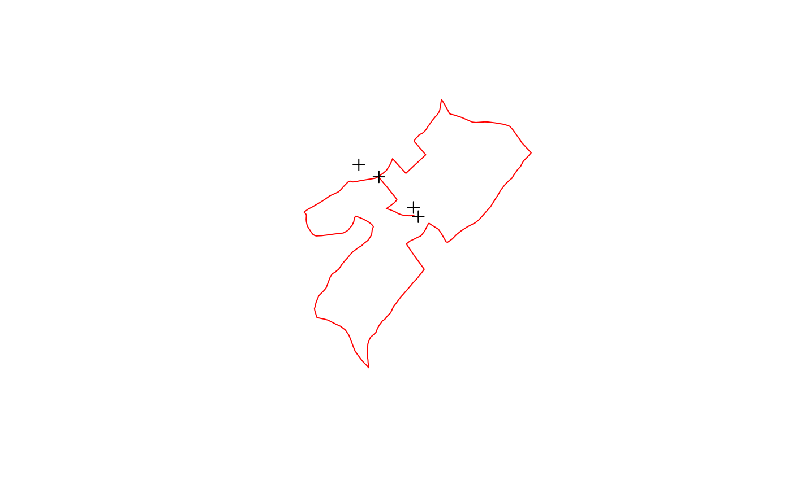

readOGR.RdThe function reads an OGR data source and layer into a suitable Spatial vector object. It can only handle layers with conformable geometry features (not mixtures of points, lines, or polygons in a single layer). It will set the spatial reference system if the layer has such metadata.
If reading a shapefile, the data source name (dsn= argument) is
the folder (directory) where the shapefile is, and the layer is the
name of the shapefile (without the .shp extension). For example to read
bounds.shp from C:/Maps, do
map <- readOGR(dsn="C:/Maps", layer="bounds"). The logic behind
this is that typically one keeps all the shapefiles for a project in
one folder (directory).
As noted below, for other file type drivers, the dsn= argument is
interpreted differently, and may be the file name itself, as for example
with the GPX driver for reading GPS data as layer="tracks"
lines or layer="track_points" points.
readOGR(dsn, layer, verbose = TRUE, p4s=NULL, stringsAsFactors=as.logical(NA), drop_unsupported_fields=FALSE, pointDropZ=FALSE, dropNULLGeometries=TRUE, useC=TRUE, disambiguateFIDs=FALSE, addCommentsToPolygons=TRUE, encoding=NULL, use_iconv=FALSE, swapAxisOrder=FALSE, require_geomType = NULL, integer64="no.loss", GDAL1_integer64_policy=FALSE, morphFromESRI = NULL, dumpSRS = FALSE, enforce_xy = NULL) ogrInfo(dsn, layer, encoding=NULL, use_iconv=FALSE, swapAxisOrder=FALSE, require_geomType = NULL, morphFromESRI = NULL, dumpSRS = FALSE, enforce_xy = NULL) ogrFIDs(dsn, layer) ogrDrivers() OGRSpatialRef(dsn, layer, morphFromESRI=NULL, dumpSRS = FALSE, driver = NULL, enforce_xy = NULL) ogrListLayers(dsn) # S3 method for ogrinfo print(x, ...)
| dsn | data source name (interpretation varies by driver --- for some drivers, dsn is a file name, but may also be a folder) |
|---|---|
| layer | layer name (varies by driver, may be a file name without extension). From rgdal 1.2.*, layer may be missing, in which case ogrListLayers examines the dsn, and fails if there are no layers, silently reads the only layer if only one layer is found, and reads the first layer if multiple layers are present, issuing a warning that layer should be given explicitly. |
| verbose | report progress |
| p4s | PROJ4 string defining CRS, if default NULL, the value is read from the OGR data set |
| stringsAsFactors | logical: should character vectors be converted to factors? Default NA, which uses the deprecated |
| drop\_unsupported\_fields | default FALSE, if TRUE skip fields other than String, Integer, and Real; Date, Time and DateTime are converted to String |
| pointDropZ | default FALSE, if TRUE, discard third coordinates for point geometries; third coordinates are alway discarded for line and polygon geometries |
| dropNULLGeometries | default TRUE, drop both declared NULL geometries, and empty geometries with no coordinates; if FALSE, return a data frame with the attribute values of the NULL and empty geometries. From 1.3-6, setting FALSE also works when there are no geometries at all, returning a data.frame including all FIDs |
| useC | default TRUE, if FALSE use original interpreted code in a loop |
| disambiguateFIDs | default FALSE, if TRUE, and FID values are not unique, they will be set to unique values 1:N for N features; problem observed in GML files |
| addCommentsToPolygons | default TRUE, may be set FALSE for legacy behaviour; used to indicate which interior rings are holes in which exterior rings in conformance with OGC SFS specifications |
| encoding | default NULL, if set to a character string, and the driver is “ESRI Shapefile”, and use_iconv is FALSE, it is passed to the CPL Option “SHAPE_ENCODING” immediately before reading the DBF of a shapefile. If use_iconv is TRUE, and encoding is not NULL, it will be used to convert input strings from the given value to the native encoding for the system/platform. |
| use_iconv | default FALSE; if TRUE and encoding is not NULL, it will be used to convert input strings from the given value to the native encoding for the system/platform. |
| swapAxisOrder | default FALSE, if TRUE, treat y coordinate as Easting, x as Northing, that is the opposite to the assumed order; this may be needed if some OGR read drivers do not behave as expected |
| require_geomType | , default NULL, if one of: |
| integer64 | default “no.loss” (from rgdal 1.2.*). From GDAL 2, fields to be read may also take Integer64 values. As R has no such storage mode, three options are offered, analogous with |
| GDAL1_integer64_policy | default FALSE, if TRUE, Integer64 fields are read as doubles |
| morphFromESRI | default NULL, morph from ESRI WKT1 dialect |
| dumpSRS | dump SRS to stdout from inside GDAL to debug conversion - developer use only |
| enforce_xy | (PROJ6+/GDAL3+) either use global setting (default NULL) or override policy for coordinate ordering easting/x as first axis, northing/y as second axis. |
| driver | default NULL, driver found using |
| x | ogrinfo object |
| ... | other arguments to print method |
The drivers available will depend on the installation of GDAL/OGR, and can vary; the ogrDrivers() function shows which are available, and which may be written (but all are assumed to be readable). Note that stray files in data source directories (such as *.dbf) may lead to suprious errors that accompanying *.shp are missing.
A Spatial object is returned suiting the vector data source, either a SpatialPointsDataFrame (using an AttributeList for its data slot directly), a SpatialLinesDataFrame, or a SpatialPolygonsDataFrame.
https://gdal.org/drivers/vector/index.html, https://examples.oreilly.com/webmapping/
The bases for this implementation are taken from functions in Barry Rowlingson's draft Rmap package, and from Radim Blazek's v.in.ogr program in GRASS.
Please note that the OGR drivers used may not handle missing data gracefully, and be prepared to have to correct for this manually. From rgdal 0.5-27, missing value handling has been improved, and OGR unset field values are set to NA in R, but drivers and external files may vary in their representations of missing values.
In addition, from 0.6-9 date and time fields are read as strings rather than being treated as unsupported; NULL geometries are identified and dropped. There are differences in the reporting of NULL geometries between ogrInfo and readOGR - in ogrInfo, only declared NULL geometries are reported, but in readOGR, any line or polygon geometries with no coordinates are assigned NULL geometry status as well. An attempt is made to close unclosed rings in polygon geometries.
For reading GPX files, refer to the OGR GPX format documentation for the use of layer tags: “waypoints”, “tracks”, “routes”, “track_points” and “route_points” - reading GPX files requires a build of GDAL/OGR with the expat XML library.
From 0.6-10, attempts are made to detect deleted features still present in the layer, but not read. Apparently features deleted in Qgis are only marked as deleted, but are still in the layer. These are not NULL geometries, but still need to be handled. An attempt is made to check the FID values, and ogrFIDs now returns attributes permitting this oddity to be detected. Such deleted features were seen as NULL in 0.6-9, but are not such.
From 0.7-24, if the layer has no fields, a single field containing the FID values is placed in the data slot of the returned object.
From 0.7-24, attempts are begun to provide users with arguments to control reading from OGR/shapefile driver when the encoding is inappropriate (especially the setting of LDID in shapefile DBFs, and the SHAPE_ENCODING environment variable).
While there is no certainty, newer drivers such as KML, GML, SQLite and Geopackage (GPKG) may encode string fields as UTF-8. Users are advised to explore this on a case to case basis using Encoding on string fields of input objects.
Because of the representation of DateTime data in OGR, decimal seconds in input data are rounded to integer seconds, see: http://trac.osgeo.org/gdal/ticket/2680.
Because some drivers support reading string, integer and real list fields, support has been introduced into ogrInfo from version 0.9-1 to report their presence and the maximum counts of list items. This may lead to the introduction of the -splitlistfields facility from the command line utility ogrinfo. In addition, ogrInfo reports that there are no features when counting FIDs in a while loop over features in ogrFIDs never enters the loop, despite the layer feature count reporting at least one feature.
SpatialPointsDataFrame-class, SpatialLinesDataFrame-class, SpatialPolygonsDataFrame-class, readShapePoly, iconv
#> name long_name #> 1 AeronavFAA Aeronav FAA #> 2 AmigoCloud AmigoCloud #> 3 ARCGEN Arc/Info Generate #> 4 AVCBin Arc/Info Binary Coverage #> 5 AVCE00 Arc/Info E00 (ASCII) Coverage #> 6 BNA Atlas BNA #> 7 CAD AutoCAD Driver #> 8 Carto Carto #> 9 Cloudant Cloudant / CouchDB #> 10 CouchDB CouchDB / GeoCouch #> 11 CSV Comma Separated Value (.csv) #> 12 CSW OGC CSW (Catalog Service for the Web) #> 13 DGN Microstation DGN #> 14 DXF AutoCAD DXF #> 15 EDIGEO French EDIGEO exchange format #> 16 EEDA Earth Engine Data API #> 17 Elasticsearch Elastic Search #> 18 ESRI Shapefile ESRI Shapefile #> 19 ESRIJSON ESRIJSON #> 20 FlatGeobuf FlatGeobuf #> 21 Geoconcept Geoconcept #> 22 GeoJSON GeoJSON #> 23 GeoJSONSeq GeoJSON Sequence #> 24 Geomedia Geomedia .mdb #> 25 GeoRSS GeoRSS #> 26 GML Geography Markup Language (GML) #> 27 GMLAS Geography Markup Language (GML) driven by application schemas #> 28 GPKG GeoPackage #> 29 GPSBabel GPSBabel #> 30 GPSTrackMaker GPSTrackMaker #> 31 GPX GPX #> 32 HTF Hydrographic Transfer Vector #> 33 HTTP HTTP Fetching Wrapper #> 34 Idrisi Idrisi Vector (.vct) #> 35 Interlis 1 Interlis 1 #> 36 Interlis 2 Interlis 2 #> 37 JML OpenJUMP JML #> 38 JP2OpenJPEG JPEG-2000 driver based on OpenJPEG library #> 39 KML Keyhole Markup Language (KML) #> 40 MapInfo File MapInfo File #> 41 MapML MapML #> 42 MBTiles MBTiles #> 43 Memory Memory #> 44 MSSQLSpatial Microsoft SQL Server Spatial Database #> 45 MVT Mapbox Vector Tiles #> 46 NAS NAS - ALKIS #> 47 netCDF Network Common Data Format #> 48 NGW NextGIS Web #> 49 OAPIF OGC API - Features #> 50 ODBC ODBC #> 51 ODS Open Document/ LibreOffice / OpenOffice Spreadsheet #> 52 OGR_GMT GMT ASCII Vectors (.gmt) #> 53 OGR_PDS Planetary Data Systems TABLE #> 54 OGR_SDTS SDTS #> 55 OGR_VRT VRT - Virtual Datasource #> 56 OpenAir OpenAir #> 57 OpenFileGDB ESRI FileGDB #> 58 OSM OpenStreetMap XML and PBF #> 59 PCIDSK PCIDSK Database File #> 60 PDF Geospatial PDF #> 61 PDS4 NASA Planetary Data System 4 #> 62 PGDUMP PostgreSQL SQL dump #> 63 PGeo ESRI Personal GeoDatabase #> 64 PLSCENES Planet Labs Scenes API #> 65 PostgreSQL PostgreSQL/PostGIS #> 66 REC EPIInfo .REC #> 67 S57 IHO S-57 (ENC) #> 68 SEGUKOOA SEG-P1 / UKOOA P1/90 #> 69 SEGY SEG-Y #> 70 Selafin Selafin #> 71 SQLite SQLite / Spatialite #> 72 SUA Tim Newport-Peace's Special Use Airspace Format #> 73 SVG Scalable Vector Graphics #> 74 SXF Storage and eXchange Format #> 75 TIGER U.S. Census TIGER/Line #> 76 TopoJSON TopoJSON #> 77 UK .NTF UK .NTF #> 78 VDV VDV-451/VDV-452/INTREST Data Format #> 79 VFK Czech Cadastral Exchange Data Format #> 80 VICAR MIPL VICAR file #> 81 Walk Walk #> 82 WAsP WAsP .map format #> 83 WFS OGC WFS (Web Feature Service) #> 84 XLS MS Excel format #> 85 XLSX MS Office Open XML spreadsheet #> 86 XPlane X-Plane/Flightgear aeronautical data #> write copy isVector #> 1 FALSE FALSE TRUE #> 2 TRUE FALSE TRUE #> 3 FALSE FALSE TRUE #> 4 FALSE FALSE TRUE #> 5 FALSE FALSE TRUE #> 6 TRUE FALSE TRUE #> 7 FALSE FALSE TRUE #> 8 TRUE FALSE TRUE #> 9 TRUE FALSE TRUE #> 10 TRUE FALSE TRUE #> 11 TRUE FALSE TRUE #> 12 FALSE FALSE TRUE #> 13 TRUE FALSE TRUE #> 14 TRUE FALSE TRUE #> 15 FALSE FALSE TRUE #> 16 FALSE FALSE TRUE #> 17 TRUE FALSE TRUE #> 18 TRUE FALSE TRUE #> 19 FALSE FALSE TRUE #> 20 TRUE FALSE TRUE #> 21 TRUE FALSE TRUE #> 22 TRUE FALSE TRUE #> 23 TRUE FALSE TRUE #> 24 FALSE FALSE TRUE #> 25 TRUE FALSE TRUE #> 26 TRUE FALSE TRUE #> 27 FALSE TRUE TRUE #> 28 TRUE TRUE TRUE #> 29 TRUE FALSE TRUE #> 30 TRUE FALSE TRUE #> 31 TRUE FALSE TRUE #> 32 FALSE FALSE TRUE #> 33 FALSE FALSE TRUE #> 34 FALSE FALSE TRUE #> 35 TRUE FALSE TRUE #> 36 TRUE FALSE TRUE #> 37 TRUE FALSE TRUE #> 38 FALSE TRUE TRUE #> 39 TRUE FALSE TRUE #> 40 TRUE FALSE TRUE #> 41 TRUE FALSE TRUE #> 42 TRUE TRUE TRUE #> 43 TRUE FALSE TRUE #> 44 TRUE FALSE TRUE #> 45 TRUE FALSE TRUE #> 46 FALSE FALSE TRUE #> 47 TRUE TRUE TRUE #> 48 TRUE TRUE TRUE #> 49 FALSE FALSE TRUE #> 50 TRUE FALSE TRUE #> 51 TRUE FALSE TRUE #> 52 TRUE FALSE TRUE #> 53 FALSE FALSE TRUE #> 54 FALSE FALSE TRUE #> 55 FALSE FALSE TRUE #> 56 FALSE FALSE TRUE #> 57 FALSE FALSE TRUE #> 58 FALSE FALSE TRUE #> 59 TRUE FALSE TRUE #> 60 TRUE TRUE TRUE #> 61 TRUE TRUE TRUE #> 62 TRUE FALSE TRUE #> 63 FALSE FALSE TRUE #> 64 FALSE FALSE TRUE #> 65 TRUE FALSE TRUE #> 66 FALSE FALSE TRUE #> 67 TRUE FALSE TRUE #> 68 FALSE FALSE TRUE #> 69 FALSE FALSE TRUE #> 70 TRUE FALSE TRUE #> 71 TRUE FALSE TRUE #> 72 FALSE FALSE TRUE #> 73 FALSE FALSE TRUE #> 74 FALSE FALSE TRUE #> 75 TRUE FALSE TRUE #> 76 FALSE FALSE TRUE #> 77 FALSE FALSE TRUE #> 78 TRUE FALSE TRUE #> 79 FALSE FALSE TRUE #> 80 TRUE TRUE TRUE #> 81 FALSE FALSE TRUE #> 82 TRUE FALSE TRUE #> 83 FALSE FALSE TRUE #> 84 FALSE FALSE TRUE #> 85 TRUE FALSE TRUE #> 86 FALSE FALSE TRUE#> [1] "trin_inca_pl03" "scot_BNG" #> [3] "kiritimati_primary_roads" "cities" #> attr(,"driver") #> [1] "ESRI Shapefile" #> attr(,"nlayers") #> [1] 4ogrInfo(dsn)#> Warning: First layer trin_inca_pl03 read; multiple layers present in #> /tmp/RtmpxNp70x/temp_libpathb5cea6eecf12c/rgdal/vectors, check layers with ogrListLayers()#> Source: "/tmp/RtmpxNp70x/temp_libpathb5cea6eecf12c/rgdal/vectors", layer: "trin_inca_pl03" #> Driver: ESRI Shapefile; number of rows: 3 #> Feature type: wkbPolygon with 2 dimensions #> Extent: (-87.09465 5.499074) - (-79.01339 10.11906) #> Null geometry IDs: 3 #> LDID: 87 #> Number of fields: 12 #> name type length typeName #> 1 ENGL_NAME 4 50 String #> 2 SCI_NAME 4 50 String #> 3 AUTHORITY 4 50 String #> 4 FAMILY 4 50 String #> 5 PRESENCE 0 2 Integer #> 6 ORIGIN 0 2 Integer #> 7 COMPILER 4 50 String #> 8 SCALE 4 50 String #> 9 TAX_COM 4 250 String #> 10 DIST_COM 4 250 String #> 11 REFERENCES 4 250 String #> 12 REVIEWERS 4 250 StringogrInfo(dsn=dsn, layer="cities")#> Source: "/tmp/RtmpxNp70x/temp_libpathb5cea6eecf12c/rgdal/vectors", layer: "cities" #> Driver: ESRI Shapefile; number of rows: 606 #> Feature type: wkbPoint with 2 dimensions #> Extent: (-165.27 -53.15) - (177.1302 78.2) #> CRS: +proj=longlat +datum=WGS84 +no_defs #> LDID: 0 #> Number of fields: 4 #> name type length typeName #> 1 NAME 4 40 String #> 2 COUNTRY 4 12 String #> 3 POPULATION 12 11 Integer64 #> 4 CAPITAL 4 1 String#> Source: "/tmp/RtmpxNp70x/temp_libpathb5cea6eecf12c/rgdal/vectors/cities.shp", layer: "cities" #> Driver: ESRI Shapefile; number of rows: 606 #> Feature type: wkbPoint with 2 dimensions #> Extent: (-165.27 -53.15) - (177.1302 78.2) #> CRS: +proj=longlat +datum=WGS84 +no_defs #> LDID: 0 #> Number of fields: 4 #> name type length typeName #> 1 NAME 4 40 String #> 2 COUNTRY 4 12 String #> 3 POPULATION 12 11 Integer64 #> 4 CAPITAL 4 1 StringogrInfo(dsn="cities.shp", layer="cities")#> Source: "/tmp/RtmpxNp70x/temp_libpathb5cea6eecf12c/rgdal/vectors/cities.shp", layer: "cities" #> Driver: ESRI Shapefile; number of rows: 606 #> Feature type: wkbPoint with 2 dimensions #> Extent: (-165.27 -53.15) - (177.1302 78.2) #> CRS: +proj=longlat +datum=WGS84 +no_defs #> LDID: 0 #> Number of fields: 4 #> name type length typeName #> 1 NAME 4 40 String #> 2 COUNTRY 4 12 String #> 3 POPULATION 12 11 Integer64 #> 4 CAPITAL 4 1 String#> OGR data source with driver: ESRI Shapefile #> Source: "/tmp/RtmpxNp70x/temp_libpathb5cea6eecf12c/rgdal/vectors", layer: "cities" #> with 606 features #> It has 4 fields #> Integer64 fields read as strings: POPULATION#> 'data.frame': 606 obs. of 4 variables: #> $ NAME : chr "Murmansk" "Arkhangelsk" "Saint Petersburg" "Magadan" ... #> $ COUNTRY : chr "Russia" "Russia" "Russia" "Russia" ... #> $ POPULATION: chr "468000" "416000" "5825000" "152000" ... #> $ CAPITAL : chr "N" "N" "N" "N" ...#> [1] "GEOGCRS[\"WGS 84\",\n DATUM[\"World Geodetic System 1984\",\n ELLIPSOID[\"WGS 84\",6378137,298.257223563,\n LENGTHUNIT[\"metre\",1]]],\n PRIMEM[\"Greenwich\",0,\n ANGLEUNIT[\"degree\",0.0174532925199433]],\n CS[ellipsoidal,2],\n AXIS[\"latitude\",north,\n ORDER[1],\n ANGLEUNIT[\"degree\",0.0174532925199433]],\n AXIS[\"longitude\",east,\n ORDER[2],\n ANGLEUNIT[\"degree\",0.0174532925199433]],\n ID[\"EPSG\",4326]]"cities$POPULATION <- type.convert(as.character(cities$POPULATION), na.strings="-99", numerals="no.loss") str(slot(cities, "data"))#> 'data.frame': 606 obs. of 4 variables: #> $ NAME : chr "Murmansk" "Arkhangelsk" "Saint Petersburg" "Magadan" ... #> $ COUNTRY : chr "Russia" "Russia" "Russia" "Russia" ... #> $ POPULATION: int 468000 416000 5825000 152000 1160000 1620000 2025000 1800000 1140000 1325000 ... #> $ CAPITAL : chr "N" "N" "N" "N" ...cities <- readOGR(dsn=dsn, layer="cities", GDAL1_integer64_policy=TRUE)#> OGR data source with driver: ESRI Shapefile #> Source: "/tmp/RtmpxNp70x/temp_libpathb5cea6eecf12c/rgdal/vectors", layer: "cities" #> with 606 features #> It has 4 fields #> Integer64 fields read as doubles: POPULATION#> 'data.frame': 606 obs. of 4 variables: #> $ NAME : chr "Murmansk" "Arkhangelsk" "Saint Petersburg" "Magadan" ... #> $ COUNTRY : chr "Russia" "Russia" "Russia" "Russia" ... #> $ POPULATION: num 468000 416000 5825000 152000 1160000 ... #> $ CAPITAL : chr "N" "N" "N" "N" ...#> Object of class SpatialPointsDataFrame #> Coordinates: #> min max #> coords.x1 -165.27 177.1302 #> coords.x2 -53.15 78.2000 #> Is projected: FALSE #> proj4string : [+proj=longlat +datum=WGS84 +no_defs] #> Number of points: 606 #> Data attributes: #> NAME COUNTRY POPULATION CAPITAL #> Length:606 Length:606 Min. : -99 Length:606 #> Class :character Class :character 1st Qu.: 243744 Class :character #> Mode :character Mode :character Median : 710447 Mode :character #> Mean : 1411999 #> 3rd Qu.: 1536250 #> Max. :23620000#> #> unknown #> 606ogrInfo(dsn=dsn, layer="kiritimati_primary_roads")#> Source: "/tmp/RtmpxNp70x/temp_libpathb5cea6eecf12c/rgdal/vectors", layer: "kiritimati_primary_roads" #> Driver: ESRI Shapefile; number of rows: 35 #> Feature type: wkbLineString with 2 dimensions #> Extent: (667587.7 187716.6) - (704048 226051.2) #> CRS: +proj=utm +zone=4 +datum=WGS84 +units=m +no_defs #> LDID: 87 #> Number of fields: 1 #> name type length typeName #> 1 Id 0 6 IntegerOGRSpatialRef(dsn=dsn, layer="kiritimati_primary_roads")#> [1] "+proj=utm +zone=4 +datum=WGS84 +units=m +no_defs"kiritimati_primary_roads <- readOGR(dsn=dsn, layer="kiritimati_primary_roads")#> OGR data source with driver: ESRI Shapefile #> Source: "/tmp/RtmpxNp70x/temp_libpathb5cea6eecf12c/rgdal/vectors", layer: "kiritimati_primary_roads" #> with 35 features #> It has 1 fieldssummary(kiritimati_primary_roads)#> Object of class SpatialLinesDataFrame #> Coordinates: #> min max #> x 667587.7 704048.0 #> y 187716.6 226051.2 #> Is projected: TRUE #> proj4string : #> [+proj=utm +zone=4 +datum=WGS84 +units=m +no_defs] #> Data attributes: #> Id #> Min. :0 #> 1st Qu.:0 #> Median :0 #> Mean :0 #> 3rd Qu.:0 #> Max. :0#> [1] "PROJCRS[\"WGS 84 / UTM zone 4N\",\n BASEGEOGCRS[\"WGS 84\",\n DATUM[\"World Geodetic System 1984\",\n ELLIPSOID[\"WGS 84\",6378137,298.257223563,\n LENGTHUNIT[\"metre\",1]]],\n PRIMEM[\"Greenwich\",0,\n ANGLEUNIT[\"degree\",0.0174532925199433]],\n ID[\"EPSG\",4326]],\n CONVERSION[\"UTM zone 4N\",\n METHOD[\"Transverse Mercator\",\n ID[\"EPSG\",9807]],\n PARAMETER[\"Latitude of natural origin\",0,\n ANGLEUNIT[\"Degree\",0.0174532925199433],\n ID[\"EPSG\",8801]],\n PARAMETER[\"Longitude of natural origin\",-159,\n ANGLEUNIT[\"Degree\",0.0174532925199433],\n ID[\"EPSG\",8802]],\n PARAMETER[\"Scale factor at natural origin\",0.9996,\n SCALEUNIT[\"unity\",1],\n ID[\"EPSG\",8805]],\n PARAMETER[\"False easting\",500000,\n LENGTHUNIT[\"metre\",1],\n ID[\"EPSG\",8806]],\n PARAMETER[\"False northing\",0,\n LENGTHUNIT[\"metre\",1],\n ID[\"EPSG\",8807]]],\n CS[Cartesian,2],\n AXIS[\"(E)\",east,\n ORDER[1],\n LENGTHUNIT[\"metre\",1]],\n AXIS[\"(N)\",north,\n ORDER[2],\n LENGTHUNIT[\"metre\",1]],\n ID[\"EPSG\",32604]]"ogrInfo(dsn=dsn, layer="scot_BNG")#> Source: "/tmp/RtmpxNp70x/temp_libpathb5cea6eecf12c/rgdal/vectors", layer: "scot_BNG" #> Driver: ESRI Shapefile; number of rows: 56 #> Feature type: wkbPolygon with 2 dimensions #> Extent: (7094.552 529495) - (468285.5 1218342) #> CRS: +proj=tmerc +lat_0=49 +lon_0=-2 +k=0.9996012717 +x_0=400000 +y_0=-100000 +ellps=airy +units=m +no_defs #> LDID: 0 #> Number of fields: 13 #> name type length typeName #> 1 SP_ID 4 5 String #> 2 NAME 4 13 String #> 3 ID_x 2 19 Real #> 4 COUNT 2 19 Real #> 5 SMR 2 19 Real #> 6 LONG 2 19 Real #> 7 LAT 2 19 Real #> 8 PY 2 19 Real #> 9 EXP_ 2 19 Real #> 10 AFF 2 19 Real #> 11 X_COOR 2 19 Real #> 12 Y_COOR 2 19 Real #> 13 ID_y 2 19 RealOGRSpatialRef(dsn=dsn, layer="scot_BNG")#> [1] "+proj=tmerc +lat_0=49 +lon_0=-2 +k=0.9996012717 +x_0=400000 +y_0=-100000 +ellps=airy +units=m +no_defs"scot_BNG <- readOGR(dsn=dsn, layer="scot_BNG")#> OGR data source with driver: ESRI Shapefile #> Source: "/tmp/RtmpxNp70x/temp_libpathb5cea6eecf12c/rgdal/vectors", layer: "scot_BNG" #> with 56 features #> It has 13 fieldssummary(scot_BNG)#> Object of class SpatialPolygonsDataFrame #> Coordinates: #> min max #> x 7094.552 468285.5 #> y 529495.039 1218342.5 #> Is projected: TRUE #> proj4string : #> [+proj=tmerc +lat_0=49 +lon_0=-2 +k=0.9996012717 +x_0=400000 #> +y_0=-100000 +ellps=airy +units=m +no_defs] #> Data attributes: #> SP_ID NAME ID_x COUNT #> Length:56 Length:56 Min. : 1.00 Min. : 0.000 #> Class :character Class :character 1st Qu.:14.75 1st Qu.: 4.750 #> Mode :character Mode :character Median :28.50 Median : 8.000 #> Mean :28.50 Mean : 9.571 #> 3rd Qu.:42.25 3rd Qu.:11.000 #> Max. :56.00 Max. :39.000 #> SMR LONG LAT PY #> Min. : 0.0 Min. :54.94 Min. :1.430 Min. : 27075 #> 1st Qu.: 49.6 1st Qu.:55.78 1st Qu.:3.288 1st Qu.: 100559 #> Median :111.5 Median :56.04 Median :4.090 Median : 182333 #> Mean :152.6 Mean :56.40 Mean :4.012 Mean : 267498 #> 3rd Qu.:223.0 3rd Qu.:57.02 3rd Qu.:4.730 3rd Qu.: 313845 #> Max. :652.2 Max. :60.24 Max. :6.800 Max. :2316353 #> EXP_ AFF X_COOR Y_COOR #> Min. : 1.100 Min. : 0.000 Min. :112892 Min. : 561163 #> 1st Qu.: 4.050 1st Qu.: 1.000 1st Qu.:256624 1st Qu.: 649520 #> Median : 6.300 Median : 7.000 Median :287577 Median : 681524 #> Mean : 9.575 Mean : 8.661 Mean :288524 Mean : 723127 #> 3rd Qu.:10.125 3rd Qu.:11.500 3rd Qu.:333948 3rd Qu.: 794380 #> Max. :88.700 Max. :24.000 Max. :442244 Max. :1168904 #> ID_y #> Min. : 1.00 #> 1st Qu.:14.75 #> Median :28.50 #> Mean :28.50 #> 3rd Qu.:42.25 #> Max. :56.00#> [1] "PROJCRS[\"OSGB 1936 / British National Grid\",\n BASEGEOGCRS[\"OSGB 1936\",\n DATUM[\"OSGB 1936\",\n ELLIPSOID[\"Airy 1830\",6377563.396,299.3249646,\n LENGTHUNIT[\"metre\",1]]],\n PRIMEM[\"Greenwich\",0,\n ANGLEUNIT[\"degree\",0.0174532925199433]],\n ID[\"EPSG\",4277]],\n CONVERSION[\"British National Grid\",\n METHOD[\"Transverse Mercator\",\n ID[\"EPSG\",9807]],\n PARAMETER[\"Latitude of natural origin\",49,\n ANGLEUNIT[\"degree\",0.0174532925199433],\n ID[\"EPSG\",8801]],\n PARAMETER[\"Longitude of natural origin\",-2,\n ANGLEUNIT[\"degree\",0.0174532925199433],\n ID[\"EPSG\",8802]],\n PARAMETER[\"Scale factor at natural origin\",0.9996012717,\n SCALEUNIT[\"unity\",1],\n ID[\"EPSG\",8805]],\n PARAMETER[\"False easting\",400000,\n LENGTHUNIT[\"metre\",1],\n ID[\"EPSG\",8806]],\n PARAMETER[\"False northing\",-100000,\n LENGTHUNIT[\"metre\",1],\n ID[\"EPSG\",8807]]],\n CS[Cartesian,2],\n AXIS[\"(E)\",east,\n ORDER[1],\n LENGTHUNIT[\"metre\",1]],\n AXIS[\"(N)\",north,\n ORDER[2],\n LENGTHUNIT[\"metre\",1]],\n USAGE[\n SCOPE[\"unknown\"],\n AREA[\"UK - Britain and UKCS 49°46'N to 61°01'N, 7°33'W to 3°33'E\"],\n BBOX[49.75,-9.2,61.14,2.88]],\n ID[\"EPSG\",27700]]"if ("GML" %in% ogrDrivers()$name) { dsn <- system.file("vectors/airports.gml", package = "rgdal")[1] airports <- try(readOGR(dsn=dsn, layer="airports")) if (!inherits(airports, "try-error")) { summary(airports) if (new_proj_and_gdal()) comment(slot(airports, "proj4string")) } }#> OGR data source with driver: GML #> Source: "/tmp/RtmpxNp70x/temp_libpathb5cea6eecf12c/rgdal/vectors/airports.gml", layer: "airports" #> with 13 features #> It has 6 fields#> NULLdsn <- system.file("vectors/ps_cant_31.MIF", package = "rgdal")[1] ogrInfo(dsn=dsn, layer="ps_cant_31")#> Source: "/tmp/RtmpxNp70x/temp_libpathb5cea6eecf12c/rgdal/vectors/ps_cant_31.MIF", layer: "ps_cant_31" #> Driver: MapInfo File; number of rows: 44 #> Feature type: wkbPolygon with 2 dimensions #> Extent: (0.449114 42.69196) - (2.048339 43.91861) #> CRS: +proj=longlat +a=6378137.01 +rf=298.257223563 +no_defs #> Number of fields: 8 #> name type length typeName #> 1 CODE 4 5 String #> 2 NOM 4 40 String #> 3 POP 2 0 Real #> 4 SUP 2 0 Real #> 5 Longitude 2 0 Real #> 6 Latitude 2 0 Real #> 7 Pseudo_c 4 5 String #> 8 DEP 4 5 Stringps_cant_31 <- readOGR(dsn=dsn, layer="ps_cant_31")#> OGR data source with driver: MapInfo File #> Source: "/tmp/RtmpxNp70x/temp_libpathb5cea6eecf12c/rgdal/vectors/ps_cant_31.MIF", layer: "ps_cant_31" #> with 44 features #> It has 8 fieldssummary(ps_cant_31)#> Object of class SpatialPolygonsDataFrame #> Coordinates: #> min max #> x 0.449114 2.048339 #> y 42.691957 43.918612 #> Is projected: FALSE #> proj4string : #> [+proj=longlat +a=6378137.01 +rf=298.257223563 +no_defs] #> Data attributes: #> CODE NOM POP SUP #> Length:44 Length:44 Min. : 3188 Min. : 635 #> Class :character Class :character 1st Qu.: 4748 1st Qu.:10234 #> Mode :character Mode :character Median : 9205 Median :15826 #> Mean : 21043 Mean :14478 #> 3rd Qu.: 22392 3rd Qu.:19007 #> Max. :358598 Max. :31161 #> Longitude Latitude Pseudo_c DEP #> Min. : 518350 Min. : 1838600 Length:44 Length:44 #> 1st Qu.: 4777200 1st Qu.:16575363 Class :character Class :character #> Median : 6403225 Median :22660600 Mode :character Mode :character #> Mean : 6717604 Mean :24264069 #> 3rd Qu.: 9209718 3rd Qu.:34440138 #> Max. :14086469 Max. :54508151#> CODE NOM POP SUP Longitude Latitude #> "character" "character" "numeric" "numeric" "numeric" "numeric" #> Pseudo_c DEP #> "character" "character"#> [1] "GEOGCRS[\"unnamed\",\n DATUM[\"MIF 0\",\n ELLIPSOID[\"WGS 84 (MAPINFO Datum 0)\",6378137.01,298.257223563,\n LENGTHUNIT[\"metre\",1,\n ID[\"EPSG\",9001]]]],\n PRIMEM[\"Greenwich\",0,\n ANGLEUNIT[\"degree\",0.0174532925199433,\n ID[\"EPSG\",9122]]],\n CS[ellipsoidal,2],\n AXIS[\"latitude\",north,\n ORDER[1],\n ANGLEUNIT[\"degree\",0.0174532925199433,\n ID[\"EPSG\",9122]]],\n AXIS[\"longitude\",east,\n ORDER[2],\n ANGLEUNIT[\"degree\",0.0174532925199433,\n ID[\"EPSG\",9122]]]]"ps_cant_31 <- readOGR(dsn=dsn, layer="ps_cant_31", stringsAsFactors=FALSE)#> OGR data source with driver: MapInfo File #> Source: "/tmp/RtmpxNp70x/temp_libpathb5cea6eecf12c/rgdal/vectors/ps_cant_31.MIF", layer: "ps_cant_31" #> with 44 features #> It has 8 fieldssummary(ps_cant_31)#> Object of class SpatialPolygonsDataFrame #> Coordinates: #> min max #> x 0.449114 2.048339 #> y 42.691957 43.918612 #> Is projected: FALSE #> proj4string : #> [+proj=longlat +a=6378137.01 +rf=298.257223563 +no_defs] #> Data attributes: #> CODE NOM POP SUP #> Length:44 Length:44 Min. : 3188 Min. : 635 #> Class :character Class :character 1st Qu.: 4748 1st Qu.:10234 #> Mode :character Mode :character Median : 9205 Median :15826 #> Mean : 21043 Mean :14478 #> 3rd Qu.: 22392 3rd Qu.:19007 #> Max. :358598 Max. :31161 #> Longitude Latitude Pseudo_c DEP #> Min. : 518350 Min. : 1838600 Length:44 Length:44 #> 1st Qu.: 4777200 1st Qu.:16575363 Class :character Class :character #> Median : 6403225 Median :22660600 Mode :character Mode :character #> Mean : 6717604 Mean :24264069 #> 3rd Qu.: 9209718 3rd Qu.:34440138 #> Max. :14086469 Max. :54508151#> CODE NOM POP SUP Longitude Latitude #> "character" "character" "numeric" "numeric" "numeric" "numeric" #> Pseudo_c DEP #> "character" "character"#> Source: "/tmp/RtmpxNp70x/temp_libpathb5cea6eecf12c/rgdal/vectors/Up.tab", layer: "Up" #> Driver: MapInfo File; number of rows: 81 #> Feature type: wkbPolygon with 2 dimensions #> Extent: (598047.2 781652.7) - (619791.4 812944.4) #> CRS: +proj=utm +zone=23 +south +ellps=aust_SA +units=m +no_defs #> Number of fields: 52 #> name type length typeName #> 1 ID 0 0 Integer #> 2 unid_planejamento 4 4 String #> 3 codigo2 4 4 String #> 4 descricao 4 100 String #> 5 Area 2 20 Real #> 6 densidade_pop 2 0 Real #> 7 POPULACAO 2 0 Real #> 8 Idademed 2 8 Real #> 9 Med_estu 2 11 Real #> 10 Idosoper 2 8 Real #> 11 Crianca 2 8 Real #> 12 THomCor_95 2 0 Real #> 13 THomCor_96 2 0 Real #> 14 THomCor_97 2 0 Real #> 15 THomCor_98 2 0 Real #> 16 THomCor_99 2 0 Real #> 17 HomCor_95 2 0 Real #> 18 HomCor_96 2 0 Real #> 19 HomCor_97 2 0 Real #> 20 HomCor_98 2 0 Real #> 21 HomCor_99 2 0 Real #> 22 RouboCor_95 2 0 Real #> 23 RouboCor_96 2 0 Real #> 24 RouboCor_97 2 0 Real #> 25 RouboCor_98 2 0 Real #> 26 RouboCor_99 2 0 Real #> 27 RMACor_95 2 0 Real #> 28 RMACor_96 2 0 Real #> 29 RMACor_97 2 0 Real #> 30 RMACor_98 2 0 Real #> 31 RMACor_99 2 0 Real #> 32 CRpesCor_95 2 0 Real #> 33 CRpesCor_96 2 0 Real #> 34 CRpesCor_97 2 0 Real #> 35 CRpesCor_98 2 0 Real #> 36 CRpesCor_99 2 0 Real #> 37 PatriCor_95 2 0 Real #> 38 PatriCor_96 2 0 Real #> 39 PatriCor_97 2 0 Real #> 40 PatriCor_98 2 0 Real #> 41 PatriCor_99 2 0 Real #> 42 RENDA 2 0 Real #> 43 IndIFU 2 0 Real #> 44 IndASU 2 0 Real #> 45 HomTent9599 2 0 Real #> 46 Hom9599 2 0 Real #> 47 Roub9599 2 0 Real #> 48 RMA9599 2 0 Real #> 49 RMA9599_2 2 0 Real #> 50 CRpes9599 2 0 Real #> 51 Patri9599 2 0 Real #> 52 PERAREAC 2 0 RealUp <- readOGR(dsn=dsn, layer="Up")#> OGR data source with driver: MapInfo File #> Source: "/tmp/RtmpxNp70x/temp_libpathb5cea6eecf12c/rgdal/vectors/Up.tab", layer: "Up" #> with 81 features #> It has 52 fieldssummary(Up)#> Object of class SpatialPolygonsDataFrame #> Coordinates: #> min max #> x 598047.2 619791.4 #> y 781652.7 812944.4 #> Is projected: TRUE #> proj4string : #> [+proj=utm +zone=23 +south +ellps=aust_SA +units=m +no_defs] #> Data attributes: #> ID unid_planejamento codigo2 descricao #> Min. : 1 Length:81 Length:81 Length:81 #> 1st Qu.:21 Class :character Class :character Class :character #> Median :41 Mode :character Mode :character Mode :character #> Mean :41 #> 3rd Qu.:61 #> Max. :81 #> Area densidade_pop POPULACAO Idademed #> Min. :0.078 Min. : 0 Min. : 0 Min. : 0.00 #> 1st Qu.:0.827 1st Qu.:10075 1st Qu.:10194 1st Qu.:26.03 #> Median :1.477 Median :21796 Median :23208 Median :27.68 #> Mean :1.566 Mean :21522 Mean :25819 Mean :28.30 #> 3rd Qu.:2.161 3rd Qu.:26710 3rd Qu.:39991 3rd Qu.:30.92 #> Max. :5.912 Max. :84872 Max. :69631 Max. :39.81 #> Med_estu Idosoper Crianca THomCor_95 #> Min. : 0.000 Min. : 0.000 Min. : 0.00 Min. : 10.76 #> 1st Qu.: 6.240 1st Qu.: 3.280 1st Qu.:19.22 1st Qu.: 30.67 #> Median : 7.680 Median : 4.140 Median :23.12 Median : 44.05 #> Mean : 8.191 Mean : 5.204 Mean :22.44 Mean : 56.20 #> 3rd Qu.:10.180 3rd Qu.: 6.580 3rd Qu.:25.67 3rd Qu.: 61.41 #> Max. :14.390 Max. :17.060 Max. :35.87 Max. :302.07 #> THomCor_96 THomCor_97 THomCor_98 THomCor_99 #> Min. : 6.666 Min. : 8.014 Min. : 7.664 Min. : 4.718 #> 1st Qu.: 17.531 1st Qu.: 21.695 1st Qu.: 36.839 1st Qu.: 21.568 #> Median : 29.530 Median : 30.585 Median : 51.769 Median : 33.460 #> Mean : 35.833 Mean : 43.619 Mean : 66.024 Mean : 43.566 #> 3rd Qu.: 40.434 3rd Qu.: 52.297 3rd Qu.: 76.805 3rd Qu.: 48.819 #> Max. :204.495 Max. :203.096 Max. :270.214 Max. :303.179 #> HomCor_95 HomCor_96 HomCor_97 HomCor_98 #> Min. : 2.661 Min. : 1.325 Min. : 1.830 Min. : 3.516 #> 1st Qu.: 4.388 1st Qu.: 3.667 1st Qu.: 4.183 1st Qu.: 8.403 #> Median : 5.529 Median : 5.910 Median : 5.699 Median :11.136 #> Mean : 6.183 Mean : 6.868 Mean : 6.861 Mean :13.718 #> 3rd Qu.: 6.961 3rd Qu.: 8.363 3rd Qu.: 7.559 3rd Qu.:15.192 #> Max. :14.883 Max. :24.932 Max. :28.544 Max. :50.005 #> HomCor_99 RouboCor_95 RouboCor_96 RouboCor_97 #> Min. : 1.573 Min. : 0.448 Min. : 0.419 Min. : 0.421 #> 1st Qu.: 4.735 1st Qu.: 17.262 1st Qu.: 16.796 1st Qu.: 21.774 #> Median : 8.003 Median : 32.894 Median : 33.230 Median : 48.739 #> Mean :10.923 Mean : 109.019 Mean : 116.590 Mean : 149.269 #> 3rd Qu.:13.558 3rd Qu.: 64.300 3rd Qu.: 70.542 3rd Qu.: 128.858 #> Max. :48.515 Max. :3522.697 Max. :3750.638 Max. :4018.214 #> RouboCor_98 RouboCor_99 RMACor_95 RMACor_96 #> Min. : 0.135 Min. : 1.304 Min. : 12.19 Min. : 13.10 #> 1st Qu.: 25.430 1st Qu.: 34.056 1st Qu.: 44.62 1st Qu.: 66.37 #> Median : 85.449 Median : 70.152 Median : 81.87 Median : 101.54 #> Mean : 797.151 Mean : 192.016 Mean : 118.86 Mean : 140.81 #> 3rd Qu.: 276.336 3rd Qu.: 135.308 3rd Qu.: 145.88 3rd Qu.: 173.36 #> Max. :23590.153 Max. :6039.410 Max. :1163.74 Max. :1025.96 #> RMACor_97 RMACor_98 RMACor_99 CRpesCor_95 #> Min. : 29.87 Min. : 46.06 Min. : 37.27 Min. : 11.08 #> 1st Qu.: 102.07 1st Qu.: 149.83 1st Qu.: 170.47 1st Qu.: 32.13 #> Median : 162.84 Median : 238.22 Median : 275.80 Median : 47.09 #> Mean : 207.57 Mean : 277.97 Mean : 346.77 Mean : 62.63 #> 3rd Qu.: 242.06 3rd Qu.: 328.98 3rd Qu.: 399.75 3rd Qu.: 68.42 #> Max. :1390.62 Max. :1746.30 Max. :3116.97 Max. :320.40 #> CRpesCor_96 CRpesCor_97 CRpesCor_98 CRpesCor_99 #> Min. : 7.327 Min. : 8.834 Min. : 7.939 Min. : 5.102 #> 1st Qu.: 20.669 1st Qu.: 25.715 1st Qu.: 42.795 1st Qu.: 26.299 #> Median : 34.913 Median : 37.315 Median : 64.888 Median : 39.858 #> Mean : 43.303 Mean : 51.280 Mean : 80.662 Mean : 54.977 #> 3rd Qu.: 51.315 3rd Qu.: 58.731 3rd Qu.: 87.589 3rd Qu.: 64.697 #> Max. :234.966 Max. :246.821 Max. :323.035 Max. :322.595 #> PatriCor_95 PatriCor_96 PatriCor_97 PatriCor_98 #> Min. : 4.388 Min. : 4.903 Min. : 14.04 Min. : 61.46 #> 1st Qu.: 58.596 1st Qu.: 71.210 1st Qu.: 130.01 1st Qu.: 214.91 #> Median : 110.455 Median : 135.437 Median : 228.21 Median : 363.27 #> Mean : 227.274 Mean : 256.954 Mean : 361.39 Mean : 939.99 #> 3rd Qu.: 204.408 3rd Qu.: 249.147 3rd Qu.: 367.02 3rd Qu.: 680.89 #> Max. :4722.555 Max. :4809.846 Max. :5449.27 Max. :14505.94 #> PatriCor_99 RENDA IndIFU IndASU #> Min. : 12.28 Min. : 104.7 Min. :-2.61604 Min. :-0.12455 #> 1st Qu.: 205.34 1st Qu.: 206.5 1st Qu.:-0.75862 1st Qu.:-0.07015 #> Median : 350.86 Median : 291.6 Median :-0.07413 Median : 0.04219 #> Mean : 554.31 Mean : 516.7 Mean :-0.30299 Mean : 0.33239 #> 3rd Qu.: 552.92 3rd Qu.: 591.3 3rd Qu.: 0.19614 3rd Qu.: 0.35495 #> Max. :9205.57 Max. :3994.5 Max. : 0.61122 Max. : 5.29971 #> HomTent9599 Hom9599 Roub9599 RMA9599 #> Min. : 9.842 Min. : 1.332 Min. : 1.327 Min. : 14.35 #> 1st Qu.: 23.818 1st Qu.: 5.014 1st Qu.: 33.661 1st Qu.: 112.86 #> Median : 40.110 Median : 7.213 Median : 75.000 Median : 176.85 #> Mean : 49.598 Mean : 9.348 Mean : 306.451 Mean : 223.02 #> 3rd Qu.: 58.499 3rd Qu.:11.752 3rd Qu.: 169.146 3rd Qu.: 272.95 #> Max. :285.429 Max. :37.327 Max. :6819.439 Max. :1708.28 #> RMA9599_2 CRpes9599 Patri9599 PERAREAC #> Min. : 14.35 Min. : 9.933 Min. : 46.16 Min. : 0.0000 #> 1st Qu.: 112.86 1st Qu.: 28.946 1st Qu.: 165.24 1st Qu.: 0.1419 #> Median : 176.85 Median : 44.519 Median : 243.87 Median : 0.5484 #> Mean : 223.02 Mean : 59.188 Mean : 528.77 Mean : 1.1358 #> 3rd Qu.: 272.95 3rd Qu.: 66.983 3rd Qu.: 413.41 3rd Qu.: 1.3150 #> Max. :1708.28 Max. :317.845 Max. :7271.53 Max. :17.5547#> [1] "PROJCRS[\"unnamed\",\n BASEGEOGCRS[\"unnamed\",\n DATUM[\"South American Datum 1969\",\n ELLIPSOID[\"South American\",6378160,298.25,\n LENGTHUNIT[\"metre\",1,\n ID[\"EPSG\",9001]]]],\n PRIMEM[\"Greenwich\",0,\n ANGLEUNIT[\"degree\",0.0174532925199433,\n ID[\"EPSG\",9122]]]],\n CONVERSION[\"UTM zone 23S\",\n METHOD[\"Transverse Mercator\",\n ID[\"EPSG\",9807]],\n PARAMETER[\"Latitude of natural origin\",0,\n ANGLEUNIT[\"degree\",0.0174532925199433],\n ID[\"EPSG\",8801]],\n PARAMETER[\"Longitude of natural origin\",-45,\n ANGLEUNIT[\"degree\",0.0174532925199433],\n ID[\"EPSG\",8802]],\n PARAMETER[\"Scale factor at natural origin\",0.9996,\n SCALEUNIT[\"unity\",1],\n ID[\"EPSG\",8805]],\n PARAMETER[\"False easting\",500000,\n LENGTHUNIT[\"metre\",1],\n ID[\"EPSG\",8806]],\n PARAMETER[\"False northing\",10000000,\n LENGTHUNIT[\"metre\",1],\n ID[\"EPSG\",8807]],\n ID[\"EPSG\",17023]],\n CS[Cartesian,2],\n AXIS[\"easting\",east,\n ORDER[1],\n LENGTHUNIT[\"metre\",1,\n ID[\"EPSG\",9001]]],\n AXIS[\"northing\",north,\n ORDER[2],\n LENGTHUNIT[\"metre\",1,\n ID[\"EPSG\",9001]]]]"dsn <- system.file("vectors/test_trk2.gpx", package = "rgdal")[1] test_trk2 <- try(readOGR(dsn=dsn, layer="tracks"))#> OGR data source with driver: GPX #> Source: "/tmp/RtmpxNp70x/temp_libpathb5cea6eecf12c/rgdal/vectors/test_trk2.gpx", layer: "tracks" #> with 2 features #> It has 12 fieldsif (!inherits(test_trk2, "try-error")) { summary(test_trk2) if (new_proj_and_gdal()) comment(slot(test_trk2, "proj4string")) }#> [1] "GEOGCRS[\"WGS 84\",\n DATUM[\"World Geodetic System 1984\",\n ELLIPSOID[\"WGS 84\",6378137,298.257223563,\n LENGTHUNIT[\"metre\",1]]],\n PRIMEM[\"Greenwich\",0,\n ANGLEUNIT[\"degree\",0.0174532925199433]],\n CS[ellipsoidal,2],\n AXIS[\"geodetic latitude (Lat)\",north,\n ORDER[1],\n ANGLEUNIT[\"degree\",0.0174532925199433]],\n AXIS[\"geodetic longitude (Lon)\",east,\n ORDER[2],\n ANGLEUNIT[\"degree\",0.0174532925199433]],\n ID[\"EPSG\",4326]]"#> OGR data source with driver: GPX #> Source: "/tmp/RtmpxNp70x/temp_libpathb5cea6eecf12c/rgdal/vectors/test_trk2.gpx", layer: "track_points" #> with 27 features #> It has 28 fieldsif (!inherits(test_trk2pts, "try-error")) { summary(test_trk2pts) if (new_proj_and_gdal()) comment(slot(test_trk2pts, "proj4string")) }#> [1] "GEOGCRS[\"WGS 84\",\n DATUM[\"World Geodetic System 1984\",\n ELLIPSOID[\"WGS 84\",6378137,298.257223563,\n LENGTHUNIT[\"metre\",1]]],\n PRIMEM[\"Greenwich\",0,\n ANGLEUNIT[\"degree\",0.0174532925199433]],\n CS[ellipsoidal,2],\n AXIS[\"geodetic latitude (Lat)\",north,\n ORDER[1],\n ANGLEUNIT[\"degree\",0.0174532925199433]],\n AXIS[\"geodetic longitude (Lon)\",east,\n ORDER[2],\n ANGLEUNIT[\"degree\",0.0174532925199433]],\n ID[\"EPSG\",4326]]"#> Source: "/tmp/RtmpxNp70x/temp_libpathb5cea6eecf12c/rgdal/vectors", layer: "trin_inca_pl03" #> Driver: ESRI Shapefile; number of rows: 3 #> Feature type: wkbPolygon with 2 dimensions #> Extent: (-87.09465 5.499074) - (-79.01339 10.11906) #> Null geometry IDs: 3 #> LDID: 87 #> Number of fields: 12 #> name type length typeName #> 1 ENGL_NAME 4 50 String #> 2 SCI_NAME 4 50 String #> 3 AUTHORITY 4 50 String #> 4 FAMILY 4 50 String #> 5 PRESENCE 0 2 Integer #> 6 ORIGIN 0 2 Integer #> 7 COMPILER 4 50 String #> 8 SCALE 4 50 String #> 9 TAX_COM 4 250 String #> 10 DIST_COM 4 250 String #> 11 REFERENCES 4 250 String #> 12 REVIEWERS 4 250 Stringbirds <- readOGR(dsn=dsn, layer="trin_inca_pl03")#> OGR data source with driver: ESRI Shapefile #> Source: "/tmp/RtmpxNp70x/temp_libpathb5cea6eecf12c/rgdal/vectors", layer: "trin_inca_pl03" #> with 3 features #> It has 12 fields#> Warning: Dropping null geometries: 3summary(birds)#> Object of class SpatialPolygonsDataFrame #> Coordinates: #> min max #> x -87.094650 -79.01339 #> y 5.499074 10.11906 #> Is projected: NA #> proj4string : [NA] #> Data attributes: #> ENGL_NAME SCI_NAME AUTHORITY FAMILY #> Length:2 Length:2 Length:2 Length:2 #> Class :character Class :character Class :character Class :character #> Mode :character Mode :character Mode :character Mode :character #> #> #> #> PRESENCE ORIGIN COMPILER SCALE #> Min. :1 Min. :3 Length:2 Length:2 #> 1st Qu.:1 1st Qu.:3 Class :character Class :character #> Median :1 Median :3 Mode :character Mode :character #> Mean :1 Mean :3 #> 3rd Qu.:1 3rd Qu.:3 #> Max. :1 Max. :3 #> TAX_COM DIST_COM REFERENCES REVIEWERS #> Length:2 Length:2 Length:2 Length:2 #> Class :character Class :character Class :character Class :character #> Mode :character Mode :character Mode :character Mode :character #> #> #>#> NULLdsn <- system.file("vectors/PacoursIKA2.TAB", package = "rgdal")[1] try(ogrInfo(dsn, "PacoursIKA2"))#> Error in ogrInfo(dsn, "PacoursIKA2") : #> Multiple incompatible geometries: wkbPoint: 4; wkbLineString: 1ogrInfo(dsn, "PacoursIKA2", require_geomType="wkbPoint")#> #>#> Source: "/tmp/RtmpxNp70x/temp_libpathb5cea6eecf12c/rgdal/vectors/PacoursIKA2.TAB", layer: "PacoursIKA2" #> Driver: MapInfo File; number of rows: 5 #> selected geometry type: wkbPoint with 4 rows #> Feature type: wkbPoint with 2 dimensions #> Extent: (899389.2 2221931) - (903680.7 2227011) #> CRS: +proj=lcc +lat_1=46.8 +lat_0=46.8 +lon_0=0 +k_0=0.999877420000019 +x_0=600000 +y_0=2200000.00000032 +ellps=clrk80ign +pm=paris +units=m +no_defs #> Number of fields: 2 #> name type length typeName #> 1 NomParcours 4 25 String #> 2 Longueur 4 25 String#> OGR data source with driver: MapInfo File #> Source: "/tmp/RtmpxNp70x/temp_libpathb5cea6eecf12c/rgdal/vectors/PacoursIKA2.TAB", layer: "PacoursIKA2" #> with 5 features; #> Selected wkbLineString feature type, with 1 rows #> It has 2 fields#>#> OGR data source with driver: MapInfo File #> Source: "/tmp/RtmpxNp70x/temp_libpathb5cea6eecf12c/rgdal/vectors/PacoursIKA2.TAB", layer: "PacoursIKA2" #> with 5 features; #> Selected wkbPoint feature type, with 4 rows #> It has 2 fields#>odir <- getwd() setwd(system.file("vectors", package = "rgdal")[1]) ow <- options("warn")$warn options("warn"=1) ogrInfo("test64.vrt", "test64")#> Source: "/tmp/RtmpxNp70x/temp_libpathb5cea6eecf12c/rgdal/vectors/test64.vrt", layer: "test64" #> Driver: OGR_VRT; number of rows: 1 #> Feature type: wkbPoint with 2 dimensions #> Extent: (0 0) - (0 0) #> CRS: +proj=longlat +datum=WGS84 +no_defs #> Number of fields: 4 #> name type length typeName #> 1 Longitude 0 0 Integer #> 2 Latitude 0 0 Integer #> 3 id 0 0 Integer #> 4 val 12 0 Integer64#> int 2147483647#> Warning: Integer64 value clamped: feature 0#> int 2147483647#> chr "987654321000"str(readOGR("test64.vrt", "test64", verbose=FALSE, stringsAsFactors=FALSE, integer64="no.loss")$val)#> chr "987654321000"